Capybaras: Happybaras
Capybaras: Happybaras
Meet the Capybara: World’s Largest Rodent
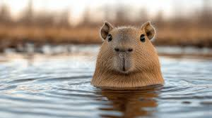
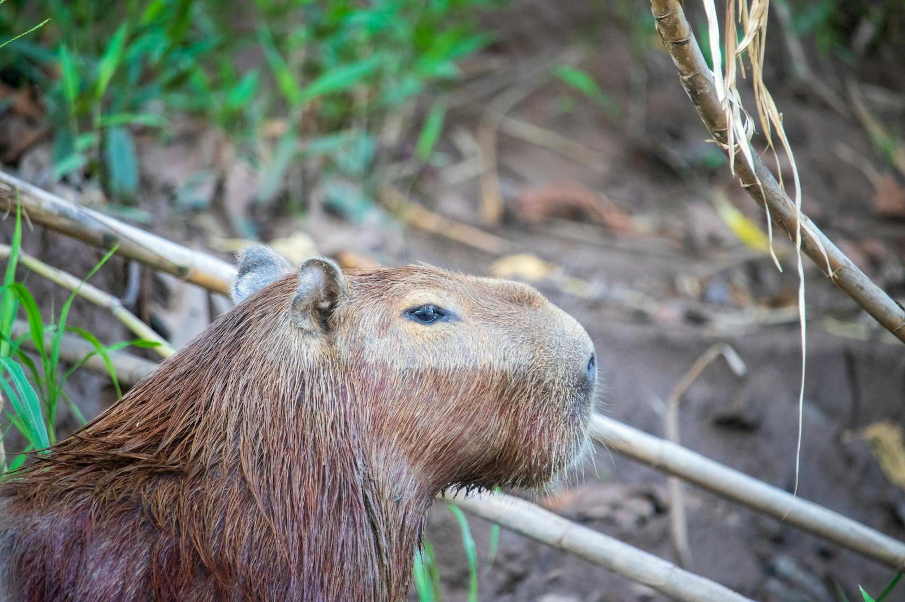
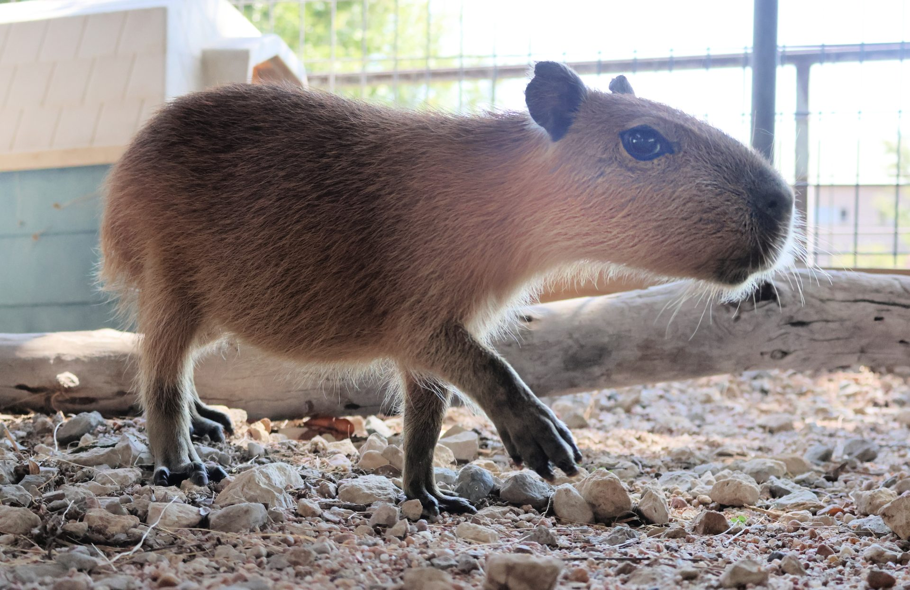
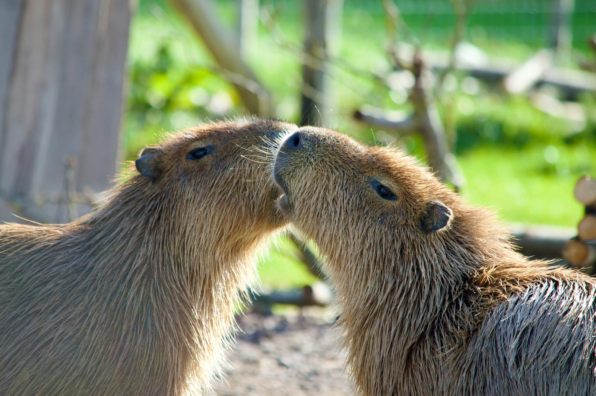
Big, chill, and totally adorable—capybaras are the world’s largest rodents and the kings of calm. These South American cuties love to lounge in water, hang with friends, and make buddies with almost any animal. With webbed feet and a peaceful vibe, they’re built for the good life. Whether they’re soaking in a pond or just being their charming selves, capybaras steal hearts everywhere. Come meet the internet’s favorite furry potato!
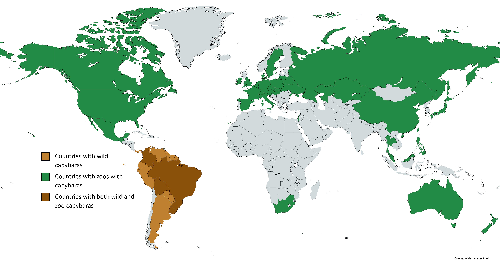
- Native to South America
- Social creatures that thrive in groups
- Webbed feet and love to swim
- Calm and friendly
- Beloved for their peaceful nature and charm
Featured Fun Fact:Nature’s Ottoman
Capybaras are so chill that other animals literally sit on them! Birds, monkeys, even other capybaras love to perch on their broad backs. Their calm, patient nature and sturdy build make them perfect lounging spots—earning them the nickname “nature’s ottoman” in the animal kingdom. Relaxation champions!

Find Your Favorite Capybara Animation

 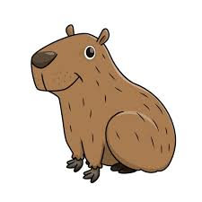
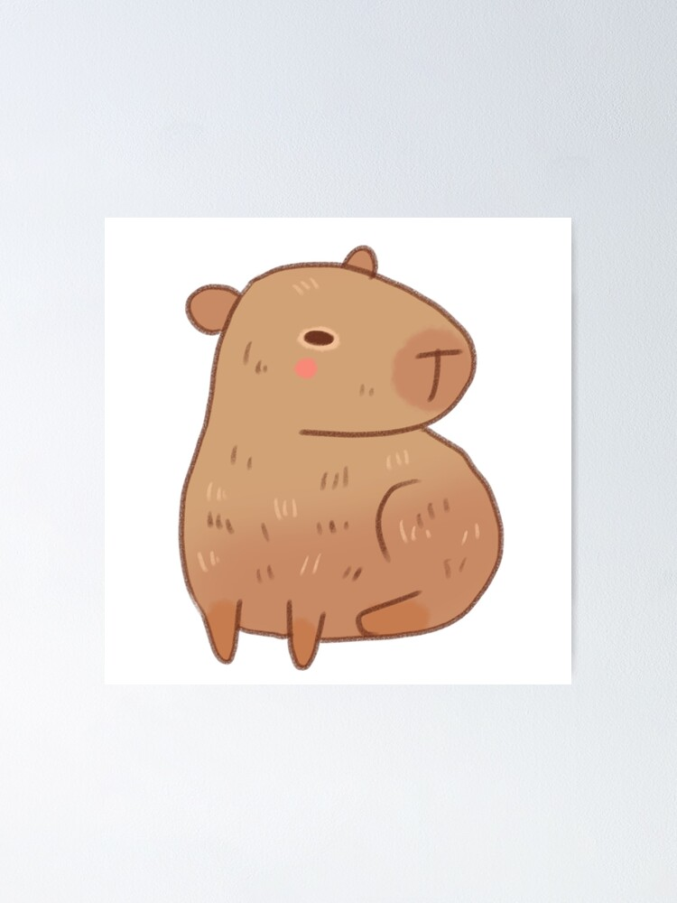
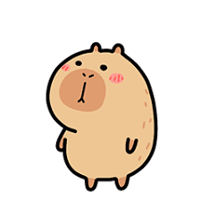
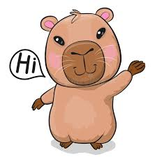
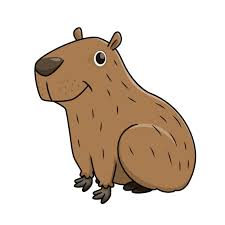
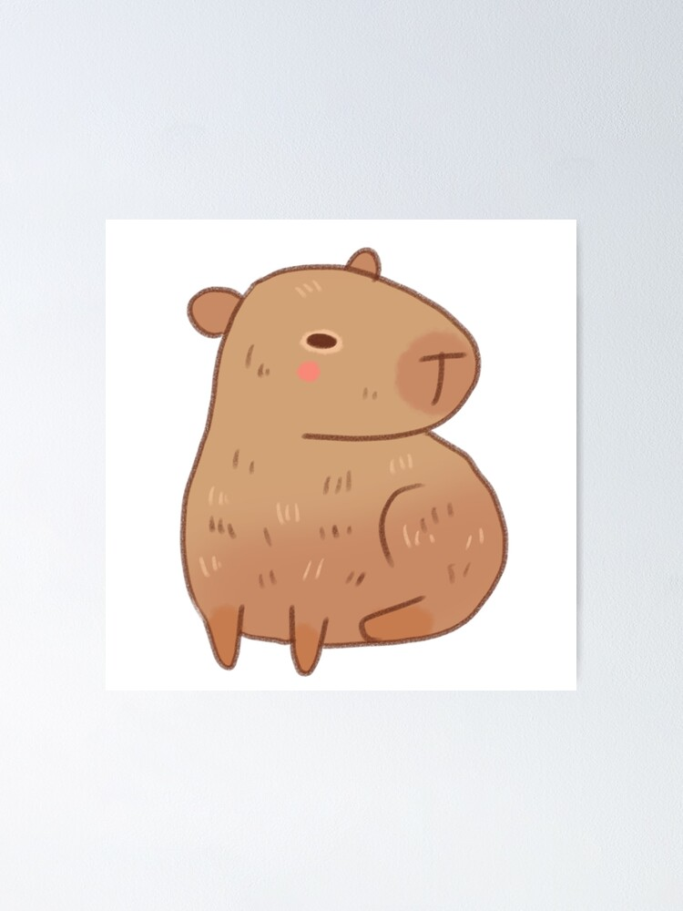
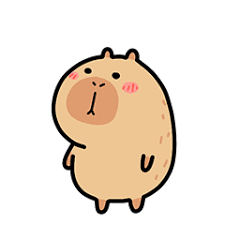
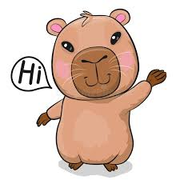